Quantile-normalize intensity measurements
Joyce Hsiao
Last updated: 2017-12-10
Code version: 483acdc
Introduction
Previously when investigating measurement variation (GFP/RFP/FAPI), we learned that there’s significant variation between batches in the distributions of background-corrected pixel intensites. See here.
\(~\)
Approach:
In this document, I apply quantile normalization to intensity measurements on a per-channel basis. The approach is as follows
Construct a reference intensity. Estimate k-quantiles of reference intensities \(Q^{R,k}= \big( {q^{R,k}_{[1]}, \dots, q^{R,k}_{[n_k]}} \big)\).
For each plate \(i\), estimate \(l\)-quantiles of intensities on a per-plate basis \(Q^{i,l}= \big( {q^{i,l}_{[1]}, \dots, q^{i,l}_{[n_l]}} \big)\).
For each plate \(i\), compare the intensity value \(F_{ij}\) with the quantile values \(\big( {q^{i,l}_{[1]}, \dots, q^{i,l}_{[n_l]}} \big)\) and assign image/well \(j\) with the quantile that has the closest intensity value, say \(q^{i,l}_{[m]}\) if \(m= argmin_{(1,\dots,n_l)} |F_{ij}- q^{i,l}_{[n_l]}|\). Then subsitute the intensity value with the \(m\)-th quantile value in the reference intensity \(q^{R,k}_{[m]}\).
\(~\)
I tried two methods for constructing reference intensity vector, and the results are vastly different depends on the method that we choose.
Method 1: Aggregate intensity values aross plates.
Method 2: Take the average of \(n\)-quantiles across plates.
\(~\)
Results:
We chose 1/.005 quantiles for all three channels. See the document for our exploratory analysis of intensities from all three channels.
Method 1 versus Method 2: Because in Method 1, the distribution of Green/Red is more dense toward low and high-valued intensities, we see that the normalized values are closer toward the boundaries.
Method 2 of constructing the reference produces better results. We see that the relationship between Green/Red is preserved before versus after normalization.
In Method 2, after normalization, the range of intensities is the same between plates for each of the three channels (Green, Red, DAPI). As a result, many of the images/wells with low intensties decreased in intensity values.
Because of 4, the distances between samples in many plates increase rather than decrease. We were looking for decrease in the distances between samples, i.e., tighter clusters or smaller within-cluster distance…
Load packages and data
library(data.table)
library(dplyr)
library(ggplot2)
library(cowplot)
library(wesanderson)
library(RColorBrewer)
library(Biobase)
plates <- c("18511_18855","18855_19101","18855_19160","18870_18511",
"18870_18855","18870_19101","18870_19160","19098_18511",
"19098_18870","19098_19160","19101_18511","19101_19098",
"19160_18870","19101_19160","19160_18511", "18855_19098")
##Combine intensity stats from different plates.
ints <- do.call(rbind, lapply(1:length(plates), function(index) {
tmp <- readRDS(paste0("/project2/gilad/fucci-seq/intensities_stats/",plates[index],".stats.rds"))
tmp <- data.frame(plate=plates[index],
image=as.character(droplevels(tmp$wellID)),
rfp.back.zoom.mean=tmp$rfp.back.zoom.mean,
rfp.back.zoom.median=tmp$rfp.back.zoom.q05,
gfp.back.zoom.mean=tmp$gfp.back.zoom.mean,
gfp.back.zoom.median=tmp$gfp.back.zoom.q05,
dapi.back.zoom.mean=tmp$dapi.back.mean,
dapi.back.zoom.median=tmp$dapi.back.q05,
rfp.mean.log10sum=with(tmp, log10((rfp.fore.zoom.mean-rfp.back.zoom.mean)*size.zoom)),
gfp.mean.log10sum=with(tmp, log10((gfp.fore.zoom.mean-gfp.back.zoom.mean)*size.zoom)),
dapi.mean.log10sum=with(tmp, log10((dapi.fore.mean-dapi.back.mean)*size)),
rfp.median.log10sum=with(tmp, log10((rfp.fore.zoom.mean-rfp.back.zoom.q05)*size.zoom)),
gfp.median.log10sum=with(tmp, log10((gfp.fore.zoom.mean-gfp.back.zoom.q05)*size.zoom)),
dapi.median.log10sum=with(tmp, log10((dapi.fore.mean-dapi.back.q05)*size)) )
tmp$rfp.mean.log10sum[which(tmp$rfp.mean.log10sum == "NaN")] <- min(tmp$rfp.mean.log10sum, na.rm=TRUE)
tmp$gfp.mean.log10sum[which(tmp$gfp.mean.log10sum == "NaN")] <- min(tmp$gfp.mean.log10sum, na.rm=TRUE)
tmp$dapi.mean.log10sum[which(tmp$dapi.mean.log10sum == "NaN")] <- min(tmp$dapi.mean.log10sum, na.rm=TRUE)
tmp$rfp.median.log10sum[which(tmp$rfp.median.log10sum == "NaN")] <- min(tmp$rfp.median.log10sum, na.rm=TRUE)
tmp$gfp.median.log10sum[which(tmp$gfp.median.log10sum == "NaN")] <- min(tmp$gfp.median.log10sum, na.rm=TRUE)
tmp$dapi.median.log10sum[which(tmp$dapi.median.log10sum == "NaN")] <- min(tmp$dapi.median.log10sum, na.rm=TRUE)
return(tmp)
}) )
#saveRDS(ints, "/project2/gilad/fucci-seq/intensities_matrix2stats/ints.rds")
##Load the expression set info.
eset_fls <- list.files("../data/eset", full.names=TRUE)
anno <- do.call(rbind, lapply(1:length(eset_fls), function(index) {
eset_index <- readRDS(eset_fls[[index]])
pdata_index <- pData(eset_index)
return(pdata_index)
}))
# make unique id in both
ints$unique <- paste0(ints$plate,"_",as.character(ints$image))
anno$unique <- paste0(anno$image_individual,"_", sprintf("%05d",as.numeric(anno$image_label)))
# subset annotation file
subset_index <- which(anno$unique %in% ints$unique)
anno_subset <- anno[subset_index,]
# subset intensities
ints_subset_index <- match(anno_subset$unique, ints$unique)
ints_subset <- ints[ints_subset_index,]
#all.equal(anno_subset$unique, ints_subset$unique)
ints_subset$chip_id <- anno_subset$chip_id\(~\)
Densit plots
\(~\)
First, look at the distribution of all batches combined versus each batch.
\(~\)
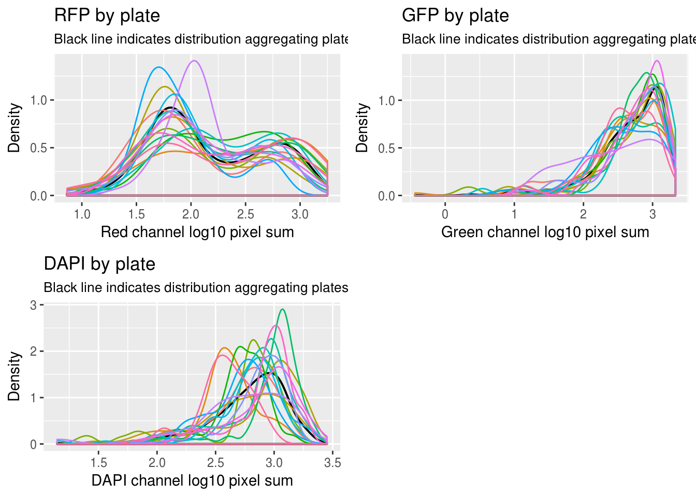
\(~\)
Normalization
\(~\)
Code for one single sample
\(~\)
my_quantnorm <- function(reference, sample, span=.01) {
# quantiles for intensities all samples across plates
quants_reference <- quantile(reference, probs=seq(0,1,span))
# intensities for a given plate
# quantiles for intensities at each plate
quants_sample <- quantile(sample, probs=seq(0,1,span))
# empty vector for normalized values
sample_normed <- vector("numeric", length=length(sample))
for (index in 1:length(sample)) {
# for each sample, find the closest sample quantile
sample_order <- names(which.min(abs(sample[index]-quants_sample)))
# # get the reference intensity value of the closet quantile
ref_order_value <- reference[which(names(quants_reference)==sample_order)]
# assign the reference intensity value to the sample
sample_normed[index] <- ref_order_value
}
return(sample_normed)
}\(~\)
Choosing quantile interval
\(~\)
RFP
\(~\)

\(~\)
GFP
\(~\)
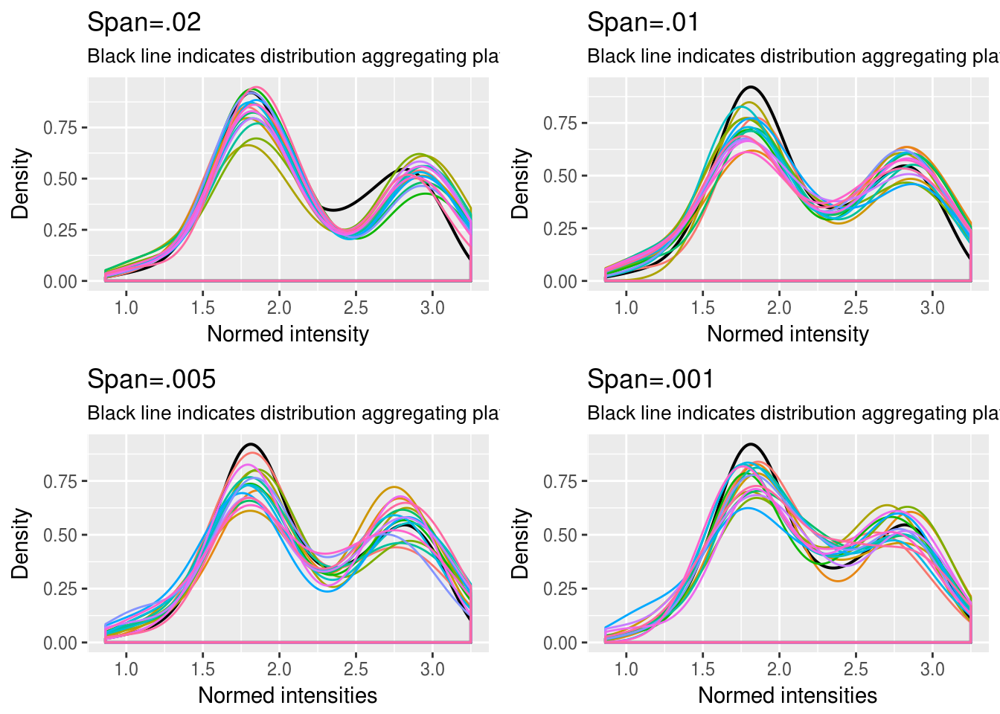
\(~\)
DAPI
\(~\)

\(~\)
Method 1
Method 1 constructs a vector of refernece intensity by aggregating all image intensity values across plates.
\(~\)
\(~\)
Distribution of the reference
\(~\)
\(~\)
After normalization
\(~\)

\(~\)
Green versus Red intensties by plate, labeled by DAPI
\(~\)
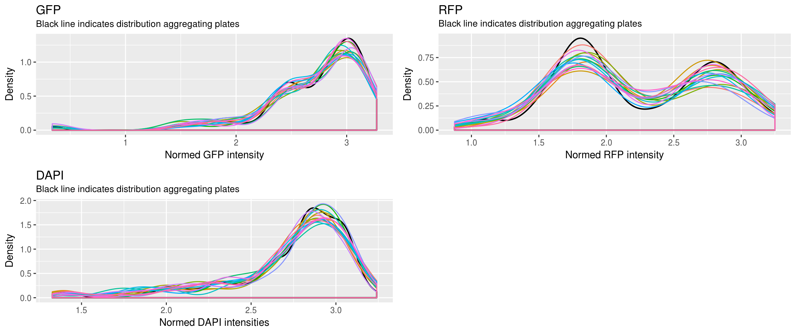
\(~\)
Green versus Red intensties by individual, labeled by DAPI
\(~\)
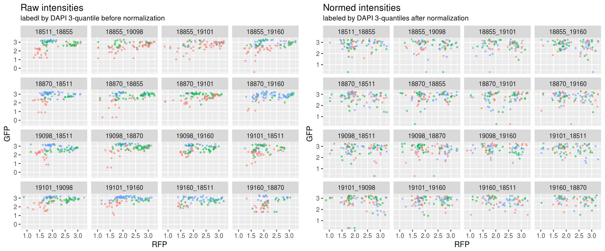
\(~\)
Green
\(~\)
\(~\)
Red
\(~\)
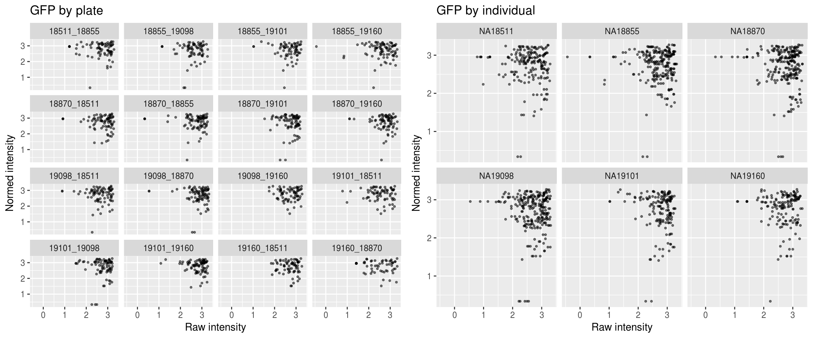
\(~\)
DAPI
\(~\)
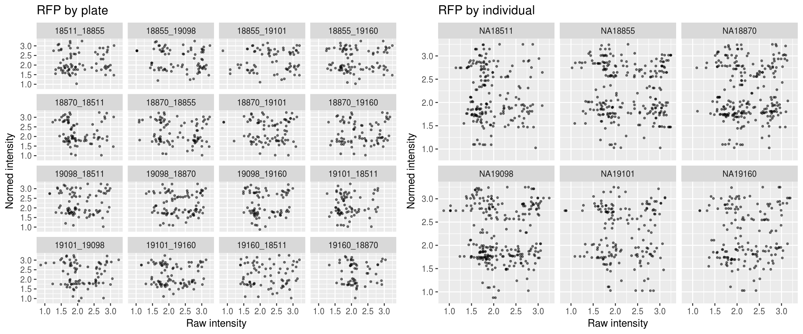
\(~\)
Method 2
\(~\)
Reference intensity vector: average of quantile values across plates.
\(~\)
\(~\)
After normalization
\(~\)

\(~\)
Green versus Red intensties by plate, labeled by DAPI
\(~\)
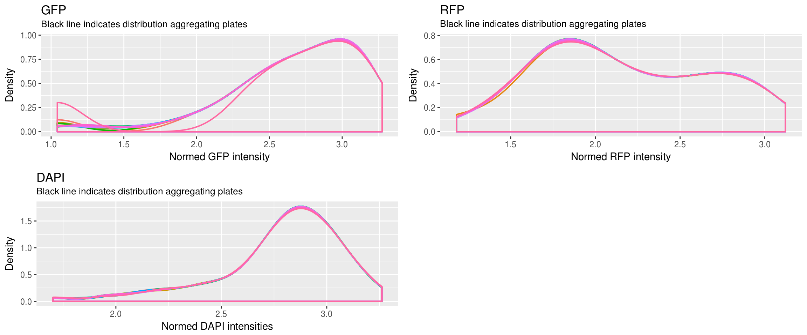
\(~\)
Green versus Red intensties by individual, labeled by DAPI
\(~\)
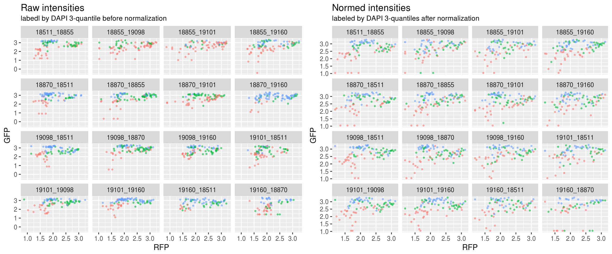
\(~\)
Green
\(~\)
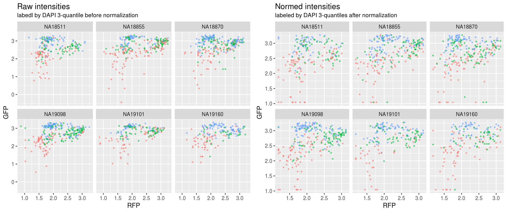
\(~\)
Red
\(~\)
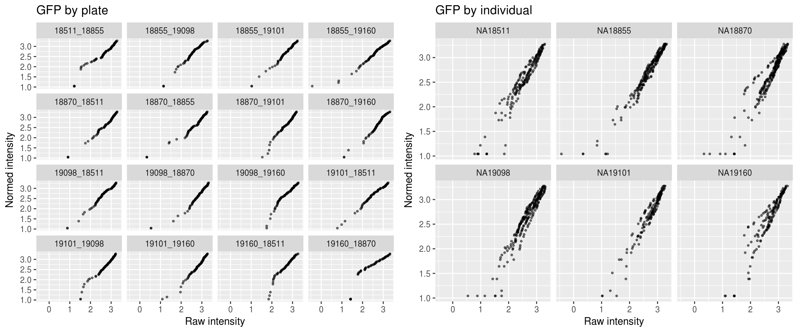
\(~\)
DAPI
\(~\)
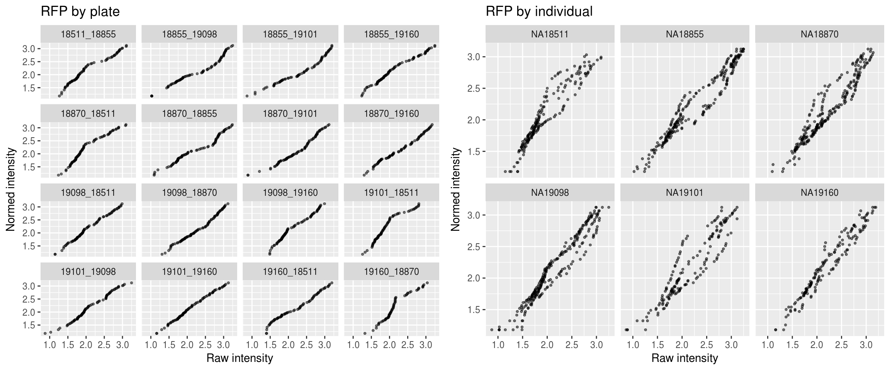
Session information
R version 3.4.1 (2017-06-30)
Platform: x86_64-pc-linux-gnu (64-bit)
Running under: Scientific Linux 7.2 (Nitrogen)
Matrix products: default
BLAS: /home/joycehsiao/miniconda3/envs/fucci-seq/lib/R/lib/libRblas.so
LAPACK: /home/joycehsiao/miniconda3/envs/fucci-seq/lib/R/lib/libRlapack.so
locale:
[1] LC_CTYPE=en_US.UTF-8 LC_NUMERIC=C
[3] LC_TIME=en_US.UTF-8 LC_COLLATE=en_US.UTF-8
[5] LC_MONETARY=en_US.UTF-8 LC_MESSAGES=en_US.UTF-8
[7] LC_PAPER=en_US.UTF-8 LC_NAME=C
[9] LC_ADDRESS=C LC_TELEPHONE=C
[11] LC_MEASUREMENT=en_US.UTF-8 LC_IDENTIFICATION=C
attached base packages:
[1] parallel stats graphics grDevices utils datasets methods
[8] base
other attached packages:
[1] Biobase_2.38.0 BiocGenerics_0.24.0 RColorBrewer_1.1-2
[4] wesanderson_0.3.2 cowplot_0.8.0 ggplot2_2.2.1
[7] dplyr_0.7.0 data.table_1.10.4
loaded via a namespace (and not attached):
[1] Rcpp_0.12.14 knitr_1.16 magrittr_1.5 munsell_0.4.3
[5] colorspace_1.3-2 R6_2.2.0 rlang_0.1.2 stringr_1.2.0
[9] plyr_1.8.4 tools_3.4.1 grid_3.4.1 gtable_0.2.0
[13] git2r_0.19.0 htmltools_0.3.6 lazyeval_0.2.0 yaml_2.1.14
[17] rprojroot_1.2 digest_0.6.12 assertthat_0.1 tibble_1.3.3
[21] glue_1.1.1 evaluate_0.10.1 rmarkdown_1.6 labeling_0.3
[25] stringi_1.1.2 compiler_3.4.1 scales_0.4.1 backports_1.0.5 This R Markdown site was created with workflowr